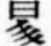

宋黃昇撰。昇字叔暘。號玉林。又號花菴詞客。以所居有玉林。又有散花菴也。毛晉刊本。以昇作昃。以叔暘作叔陽。而諸本實多作黃昇。考花菴絕妙詞選。舊傳刻本。題曰黃。校：原字非標準字据彙訂本第六八零九頁刪補。又詩人玉屑。前有昇序。世所傳翻刻宋本。猶鉤摹當日手書。亦作黃。同上。晉檢詞選序末。尚有當時姓氏小印。實作字。同上。晉蓋許愼說文。昇字篆文作。同上。晉昇特以篆體署名。故作字。同上。晉不考六書。妄改作昃。殊爲舛謬。至叔陽乃盧炳之字。炳卽撰哄堂詞者。晉乃移而爲昇字。益桃僵李代矣。昇所選絕妙詞。末附以己詞四十首。蓋用王逸編楚詞。徐陵編玉臺新詠。芮挺章編國秀集之例。此本全錄之。惟㫄摭他書。增入三首耳。昇早棄科擧。雅意歌詠。曾以詩受知游九功。見胡德方所作詞選序。其詞亦上逼少游。近摹白石。九功贈詩。所云晴空見冰柱者。庶幾似之。德方序。又謂閩帥樓秋房。聞其與魏菊莊相友。以泉石淸士目之。按菊莊名慶之。建安人。卽撰詩人玉屑者。梅礀詩話。載慶之過玉林詩絕句云。一歩離家是出塵。幾重山色幾重雲。沙溪淸淺橋邊路。折得梅花又見君。則昇必慶之之同里。隱居是地。故獲見稱於閩帥。又游九功。亦建陽人。其答叔暘五言古詩一首。尚載在詩家鼎臠。是昇爲閩人。可以考見。朱彝尊詞綜。及近時厲鶚宋詩紀事。均未及詳其里籍。今附著於此焉。